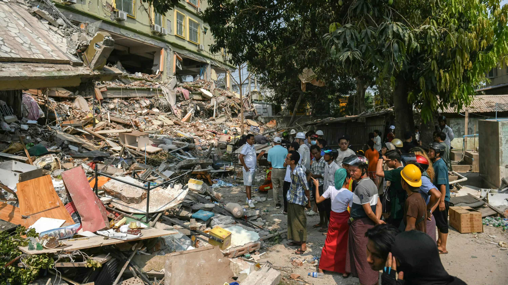
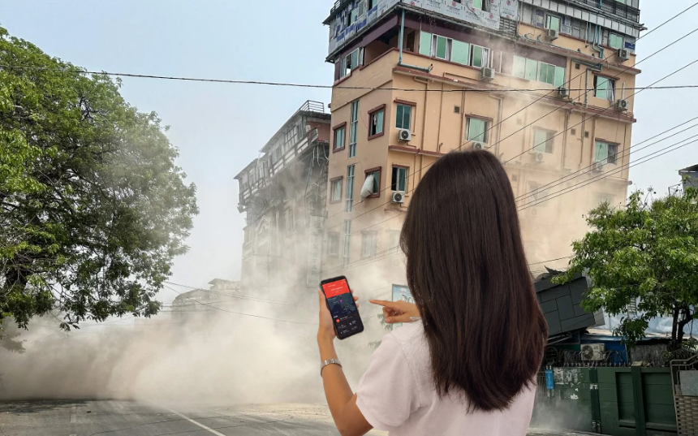
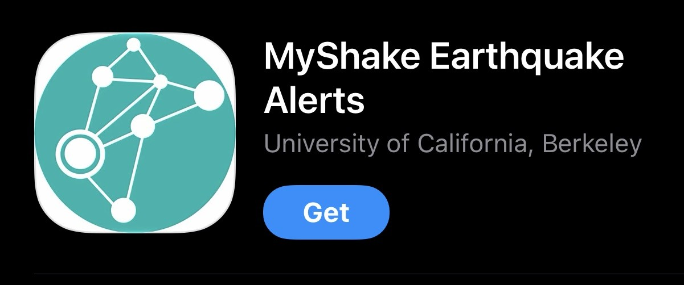
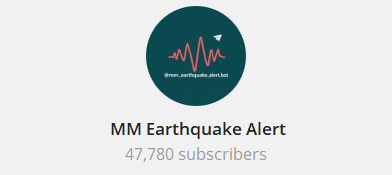
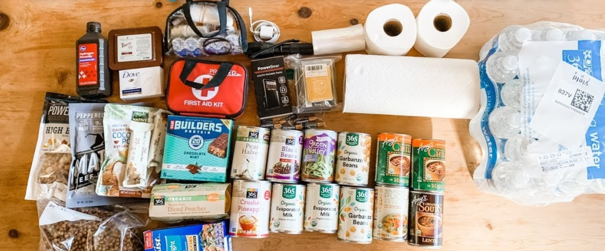
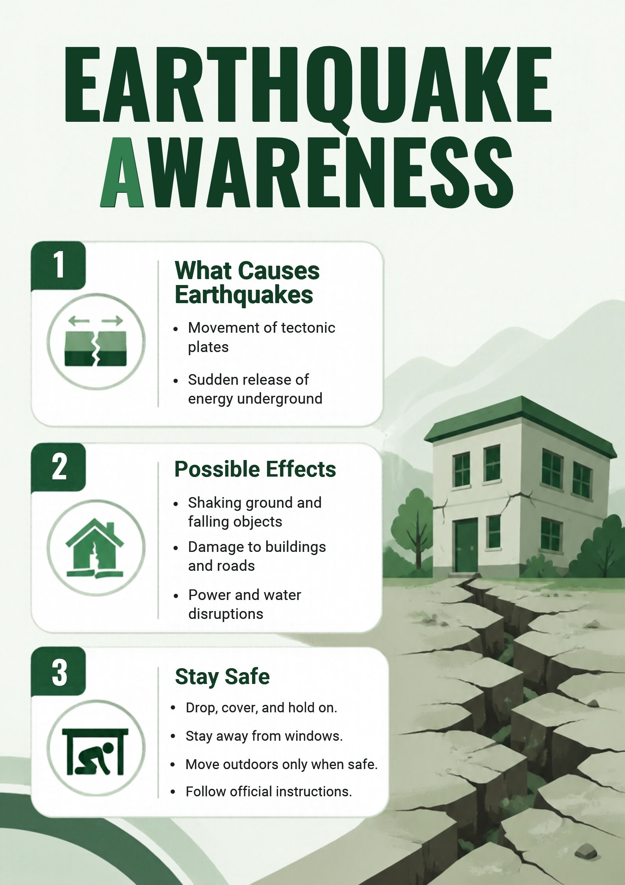

Earth &
Seismic Technologies
Discover how seismic sensors, satellite imagery, and monitoring systems help detect earthquakes and identify early signs of landslides.
Explore The Tech Return to HomeSmall habits that save lives in Myanmar.
Discover how seismic sensors, satellite imagery, and monitoring systems help detect earthquakes and identify early signs of landslides.
Explore The Tech Return to Home
Earthquakes and landslides happen with little warning. Modern tech helps scientists monitor ground movement and alert communities to stay safe.

Earthquakes release fast P-Waves and destructive S-Waves. Systems detect P-Waves immediately.
IoT devices buried in the soil detect early signs of landslides. They monitor soil tilt and moisture levels.
Satellites use radar to measure tiny changes in the Earth's surface over time.
You don't need a lab to stay safe. These free apps and simple habits can help you and your family prepare for earthquakes and landslides.

Try: MyShake (Available on App Store & Google Play).
This app turns your phone into a mini-seismometer. It detects shaking and can send alerts. Note: It is mainly designed for supported areas, so check if it works in your region.

Try: Search for MM Earthquake Alert on Telegram.
This independently run channel shares real-time updates on earthquake locations, magnitudes, and times. It is not an official government channel, but it is a fast way to see recent activity.

Try: A 10-minute family drill.
Secure heavy furniture (like bookshelves) to the wall. Practice the "Drop, Cover, and Hold On" position with your family so everyone knows what to do.
Practise simple habits - they can protect you and your family when the ground shakes.

Get down
Under a desk
To shelter
Help younger children and elderly understand safety.
Know how to receive official earthquake warnings.
Practise evacuation drills at home and school.
Discuss an emergency meeting point with family.
Keep these small items in your school bag so you're ready if a disaster strikes when you're away from home.